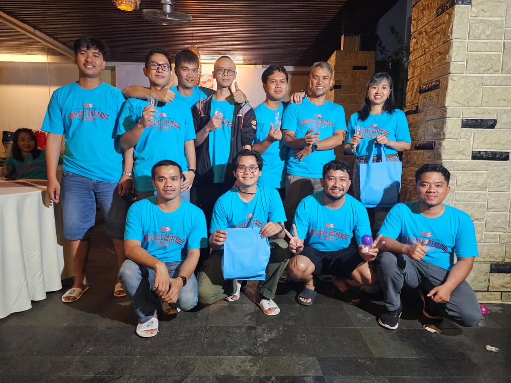

Experience
Experienced In
Boiler Operation
I have experience as Boiler Operator for 5 years on Coal Fired Powerplant 2x100 MW and have knowledge of operating systems, problem control and work procedures at Coal Fired Power Plants (CFPP)
Ash Handling System
I have experience supervising, operating, maintaining and troubleshooting equipment on flyash transfer systems.
Compressor Air System
I have experience and knowledge of the work system, operating procedures, preventive maintenance and troubleshooting of the commpressor air system.
Auxiliary Boiler
I am experienced in the operation, maintenance and troubleshooting of auxiliary boiler systems.
Boiler Projects
I have experience participating in boiler construction projects for approximately 1 year.
Team Work
with my experience so far, I understand my field of work very well, so I have experience working independently and in a team.
My Works
Featured Portofolios

Learning Path
Skills & Education
SMK PGRI Banjarbaru
Teknik Alat Berat
2015 - 2018
STT-PLN, Jakarta Barat
Diklat Vokasi ( Power Plant Personal Education )
2018 - 2019
I have experience in boiler projects and have knowledge of operating systems, problem control and work procedures at Coal Fired Power Plants (CFPP). able to analyze and determine actions in the operation of Boilers, and have knowledge of Compressor System units and handling of coal combustion ash (Flyash). I have a high spirit of work and skill, as well as a great desire to increase experience and knowledge, easy to socialize and can work individually or in teams.
- Operation Boiler
- Operation Ash Handling
- Operation Auxiliary
- Operation Commpressor
- Operation ESP System
- Troubleshooting
- Hardworking
- Teamwork
- Conscientious
- Innovative
Others
Gallery
My Team (Unit #2) at IPP Kalteng-1 PT. Datang DSSP Power Indonesia (Sinarmas)

Family gathering IPP Kalteng-1 PT. Datang DSSP Power Indonesia (Sinarmas)
Farewell photo of teammates
Address
Jl. Garuda, No.67, Kota Banjarbaru
Phone
(+62) 82123624207
arzgun1@gmail.com